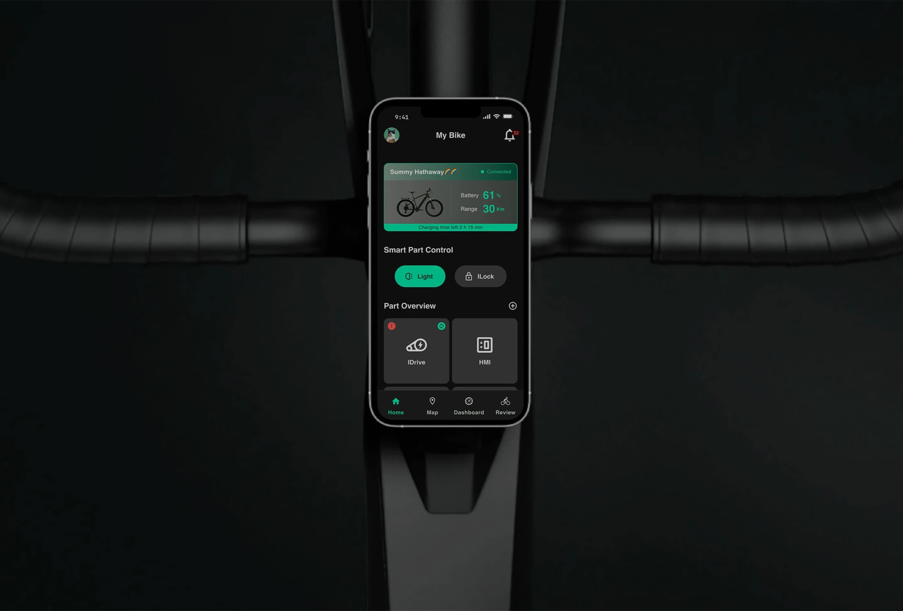
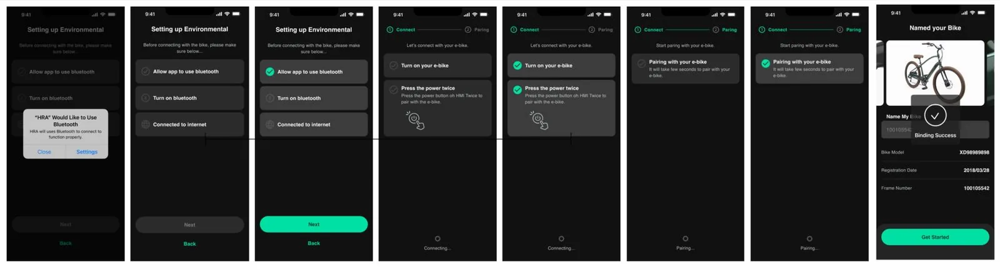
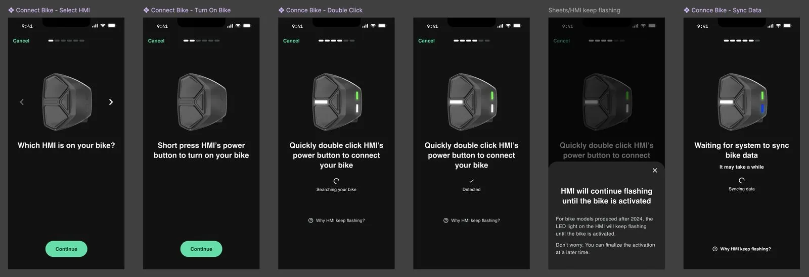
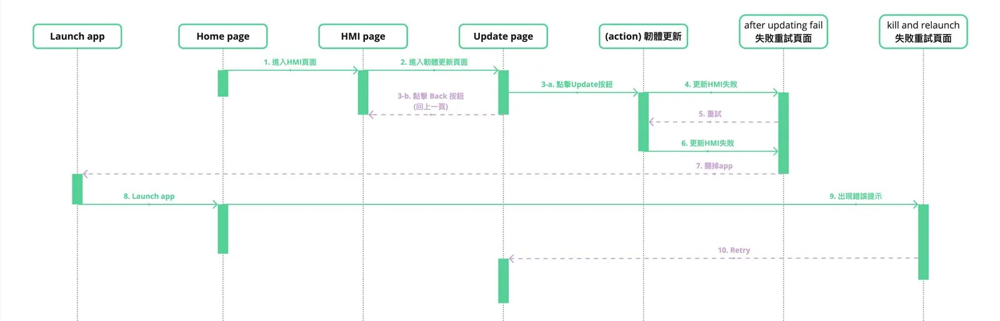

Fragmented systems
Different bike controls, BLE behaviors, and firmware versions made consistency difficult.
HYENA RIDER ASSISTANT · PRODUCT DESIGN & MANAGEMENT
I grew from Product Designer to Product Manager, bringing app, firmware, and hardware teams together to improve pairing, firmware updates, and app reliability for 50,000+ riders.

HRA helps riders pair an e-bike, record routes, review ride data, update component firmware, and manage maintenance across North America, Europe, and Asia.
I joined during the late MVP stage, when usability gaps and technical debt affected core journeys. Every improvement had to work across different bike controls, firmware versions, and mobile platforms.
Redesigned HRA from version 1.0 to 2.0, connecting rider needs with e-bike hardware behavior and app logic.
Led improvement priorities, specifications, and cross-functional delivery. After stabilization, my focus shifted to maintaining product reliability.
Different bike controls, BLE behaviors, and firmware versions made consistency difficult.
Pairing failures, interrupted updates, and crashes prevented riders from experiencing the app’s value.
Teams needed a shared view of rider impact to agree where to invest development effort.
The bike works without the app. Every interaction has to give riders a reason to trust it.
I used behavioral data, interviews, and support feedback to make the case for fixing critical journeys. Three focus areas connected the work:
Reach the first usable experience.
Understand progress and recovery.
Protect the everyday experience.
Focus areas across the rider journey; not a release timeline.
04 / IMPACT OVERVIEW
Historical improvement results, with platform breakdowns below.
Interviews and usage data showed onboarding drop-offs. Generic instructions did not account for different startup procedures and BLE indicator lights across bike models.
I mapped pairing friction with engineering, documented each HMI’s behavior with hardware and firmware teams, and translated those rules into a shared implementation specification.
Less than 0.5 seconds to power on.
More than 2 seconds to power on.

Riders had to translate a generic button instruction to their own bike.

Choose the HMI that matches the bike.
See the control and the required button action together.
Explain persistent flashing in context, with help available during pairing.
| Platform | Before | After |
|---|---|---|
| Android | ||
| iOS |
| Platform | Before | After |
|---|---|---|
| Android | 2m 35s | 2m |
| iOS | 1m 33s | 1m |
Onboarding retention improved by 17%.
I raised the severity of firmware update failures using observed data, then brought app, middleware, and firmware teams together to examine the update logic. A failed controller update could affect the bike’s assistance, making recovery a product priority.
I reviewed update data and brought stakeholders together around the severity of the problem, mapping failures across devices, app versions, and firmware types.
I coordinated discussions on update steps, failure handling, and retry behavior with middleware and firmware teams. The visible UI changes focused on clearer troubleshooting after an update failed.
I documented the agreed behavior, coordinated delivery, and shared follow-up results several months after the improvements were released.
Retry from the update page. If the app is restarted, surface the update retry prompt and guide the rider back to the update flow.

| Platform | Before | After |
|---|---|---|
| Android | ||
| iOS |
Update-related tickets fell within one month after launch.
After-sales field testing reported fewer troubleshooting needs following the update.
Android’s crash-free users rate was 78%. Crash complaints were a recurring theme in negative reviews, making stability a priority for the product.
I worked with the team to integrate Firebase Crashlytics and build a dashboard, prioritizing hotfixes by crash frequency and rider impact.
I partnered with QA to expand edge-case testing, especially around BLE interactions, and set up staged releases to validate improvements progressively.
| Platform | Before | After |
|---|---|---|
| Android | ||
| iOS |
Crashlytics logs confirmed those causes remained resolved across two app versions.
The rating improved during the stabilization period.
I connected rider feedback with system-level issues, aligned teams around shared priorities, and turned those decisions into measurable improvements.
More successful pairing and updates, fewer crashes, and less support friction.
I remain the Product Manager. Since the product stabilized, the focus has been on maintaining that stability, with no dedicated new-feature development.